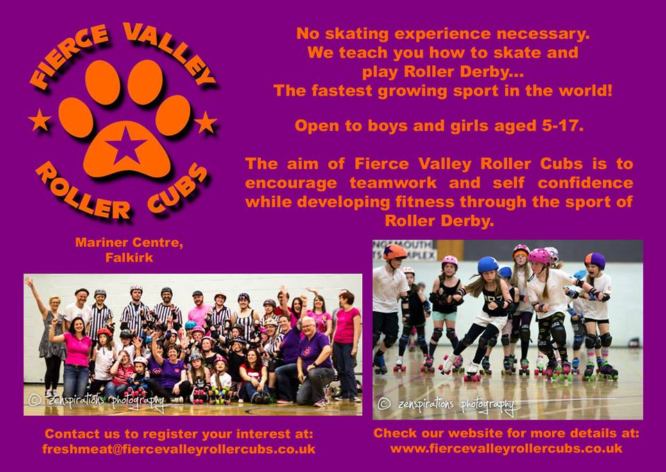

Fierce Valley Roller Cubs needs you!
Are you interested in being involved in the future of roller derby in Scotland? Now’s your chance; Fierce Valley Roller Cubs is looking for guest coaches from the wider world of Scottish roller derby.

Based in Falkirk and training every Sunday, Fierce Valley Roller Cubs is open to all between the ages of 5 and 17, and currently has a range of skaters from beginners to advanced level. Cubs skaters have taken part in several intraleague games, the first of their kind in Scotland, and last year crossed the border to take part in their first external game.

If you could spare a couple of hours to share your knowledge and skills with the next generation of derby players and help take Fierce Valley Roller Cubs to the next level, please get in touch for more information: cubs@fiercevalleyrollercubs.co.uk.
Fierce Valley Roller Cubs was the first junior roller derby league in Scotland, and began training in September 2013.